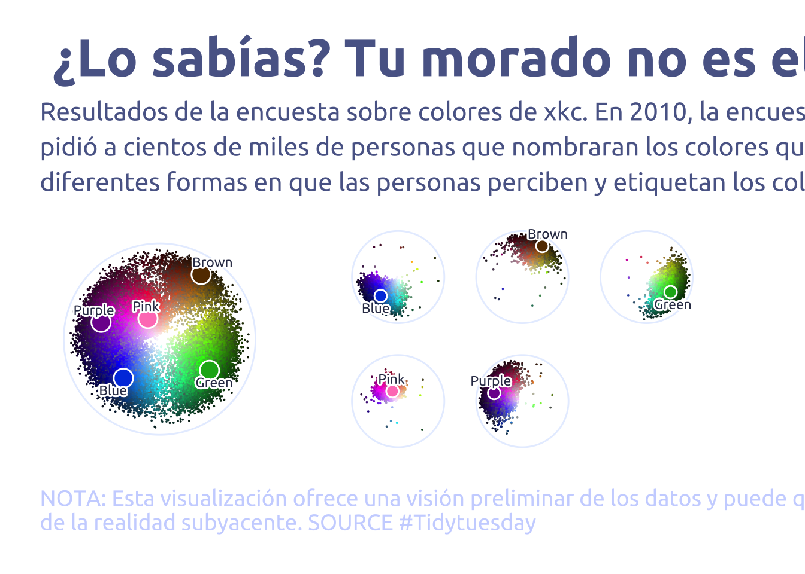

library(tidyverse)
library(glue)
library(scales)
library(showtext)
library(ggtext)
library(shadowtext)
library(maps)
library(ggpattern)
library(ggrepel)
library(patchwork)
font_add_google("Ubuntu", "Ubuntu", regular.wt = 400, bold.wt = 700)
showtext_auto()
showtext_opts(dpi = 300)
cool_gray0 <- "#323955"
cool_gray1 <- "#5a6695"
cool_gray2 <- "#7e89bb"
cool_gray3 <- "#a4aee2"
cool_gray4 <- "#cbd5ff"
cool_gray5 <- "#e7efff"
cool_red0 <- "#A31C44"
cool_red1 <- "#F01B5B"
cool_red2 <- "#F43E75"
cool_red3 <- "#E891AB"
cool_red4 <- "#FAC3D3"
cool_red5 <- "#FCE0E8"
theme_set(
theme_minimal() +
theme(
# axis.line.x.bottom = element_line(color = '#474747', linewidth = .3),
# axis.ticks.x= element_line(color = '#474747', linewidth = .3),
# axis.line.y.left = element_line(color = '#474747', linewidth = .3),
# axis.ticks.y= element_line(color = '#474747', linewidth = .3),
# # panel.grid = element_line(linewidth = .3, color = 'grey90'),
panel.grid.major = element_blank(),
panel.grid.minor = element_blank(),
axis.ticks.length = unit(-0.15, "cm"),
plot.background = element_blank(),
plot.title.position = "plot",
plot.title = element_text(family = "Ubuntu", size = 33, face = 'bold'),
plot.caption = element_text(
size = 14,
color = cool_gray4,
margin = margin(20, 0, 0, 0),
hjust = 0
),
plot.subtitle = element_text(
size = 16,
lineheight = 1.15,
margin = margin(5, 0, 15, 0)
),
axis.title.x = element_markdown(
family = "Ubuntu",
hjust = .5,
size = 8,
color = cool_gray1
),
axis.title.y = element_markdown(
family = "Ubuntu",
hjust = .5,
size = 8,
color = cool_gray1
),
axis.text = element_text(
family = "Ubuntu",
hjust = .5,
size = 9,
color = cool_gray1
),
legend.position = "top",
text = element_text(family = "Ubuntu", color = cool_gray1),
plot.margin = margin(25, 25, 25, 25)
)
)
answers <- readr::read_csv('https://raw.githubusercontent.com/rfordatascience/tidytuesday/main/data/2025/2025-07-08/answers.csv')
color_ranks <- readr::read_csv('https://raw.githubusercontent.com/rfordatascience/tidytuesday/main/data/2025/2025-07-08/color_ranks.csv')
users <- readr::read_csv('https://raw.githubusercontent.com/rfordatascience/tidytuesday/main/data/2025/2025-07-08/users.csv')
answers |> count(user_id, sort = TRUE, name = "answers") |> count(answers, sort = TRUE)# A tibble: 183 × 2
answers n
<int> <int>
1 1 17141
2 2 16036
3 3 14144
4 4 12141
5 5 10126
6 6 8234
7 7 6853
8 8 5709
9 9 4724
10 10 3927
# ℹ 173 more rowsanswers |> count(hex, sort = TRUE, name = "answers") |> count(answers, sort = TRUE)# A tibble: 5 × 2
answers n
<int> <int>
1 1 965244
2 2 44042
3 3 1566
4 4 45
5 5 1library(plotwidgets)
data2plot <-
answers |>
filter(user_id %in% (users |> filter(spam_prob < 0.001) |> pull(user_id))) |>
left_join(
color_ranks |>
rename(rank_hex = hex) |>
rowwise() |>
mutate(hsl_rank = list(col2hsl(rank_hex))) |>
ungroup(),
by = 'rank'
) |>
rowwise() |>
mutate(hsl = list(col2hsl(hex))) |>
ungroup()
data2plot <-
data2plot |>
hoist(hsl, h = 1, s = 2, l = 3) |>
hoist(hsl_rank, h_rank = 1, s_rank = 2, l_rank = 3)
data2plot2 <-
color_ranks |>
rowwise() |>
mutate(hsl_rank = list(col2hsl(hex))) |>
ungroup() |>
hoist(hsl_rank, h = 1, s = 2, l = 3) |>
filter(rank %in% data2plot$rank)
# Main
p1 <-
data2plot |>
left_join(users, by = 'user_id') |>
filter(colorblind == 0) |>
filter(spam_prob < 0.001) |>
ggplot(aes(x = h, y = -l)) +
annotate(geom = 'segment', x = 0, xend = Inf, y = 0, color = cool_gray5) +
geom_point(aes(color = hex), size = 0.001) +
geom_point(data = data2plot2, aes(color = 'white'), size = 5.5) +
geom_point(data = data2plot2, aes(color = hex), size = 4.5) +
geom_text_repel(
data = data2plot2,
aes(label = str_to_sentence(color)),
family = "Ubuntu",
color = cool_gray0,
size = 3,
nudge_x = 5,
nudge_y = .1,
direction = "y",
hjust = "center",
bg.color = 'white',
segment.size = 0,
bg.r = 0.2
) +
scale_color_identity() +
scale_y_continuous(limits = c(-1, 0)) +
coord_polar() +
labs(
title = " ¿Lo sabías? Tu morado no es el mío.",
subtitle = str_wrap(
"Resultados de la encuesta sobre colores de xkc.\nEn 2010, la encuesta sobre colores de xkcd pidió a cientos de miles de personas que nombraran los colores que veían, revelando las diferentes formas en que las personas perciben y etiquetan los colores.",
width = 90
),
pattern_spacing = NULL,
y = NULL,
x = NULL,
caption = str_wrap(
"NOTA: Esta visualización ofrece una visión preliminar de los datos y puede que no refleje toda la complejidad de la realidad subyacente. SOURCE #Tidytuesday",
width = 110,
) |>
str_replace_all("@", "\n")
) +
theme(
axis.text.x = element_blank(),
axis.text.y = element_blank(),
axis.title.x = element_blank(),
axis.title.y = element_blank(),
plot.margin = margin(0, 0, 0, 0)
)
# Faceted (copied only because of laziness)
p2 <- data2plot |>
left_join(users, by = 'user_id') |>
filter(colorblind == 0) |>
filter(spam_prob < 0.001) |>
ggplot(aes(x = h, y = -l)) +
annotate(geom = 'segment', x = 0, xend = Inf, y = 0, color = cool_gray5) +
geom_point(aes(color = hex), size = 0.001) +
geom_point(data = data2plot2, aes(color = 'white'), size = 3.5) +
geom_point(data = data2plot2, aes(color = hex), size = 2.5) +
geom_text_repel(
data = data2plot2,
aes(label = str_to_sentence(color)),
family = "Ubuntu",
color = cool_gray0,
size = 3,
nudge_x = 5,
nudge_y = .1,
direction = "y",
hjust = "center",
bg.color = 'white',
segment.size = 0,
bg.r = 0.2
) +
scale_color_identity() +
scale_y_continuous(limits = c(-1, 0)) +
coord_polar() +
facet_wrap(~color, nrow = 2) +
theme(
axis.text.x = element_blank(),
axis.text.y = element_blank(),
axis.title.x = element_blank(),
axis.title.y = element_blank(),
strip.text = element_blank(),
plot.margin = margin(0, 0, 0, 0)
)
# Plot both
p1 + p2